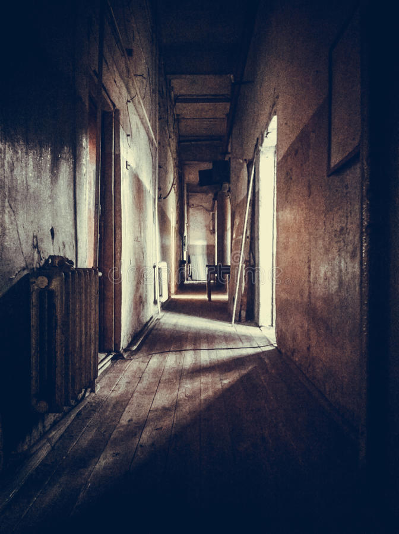

Vous coupez vos liens, et vous massez vos poignets qui sont complètement engourdis. Puis, vous vous dirigez vers la porte pour tenter de l'ouvrir : elle n'est pas verrouillée ! Vous l'entrouvez alors légèrement, et vous jetez un coup d'œil à l'extérieur. La pièce dans laquelle vous vous trouvez donne sur un balcon, situé au premier étage du Manoir, qui est bordé par une balustrade, à travers les barreaux de laquelle vous pouvez apercevoir le hall d'entrée. A votre gauche, deux portes sont situées dans le coin de ce balcon, qui se poursuit après avoir tourné sur la droite. Voulez-vous vous diriger dans cette direction ?. En tournant votre regard vers la droite, vous remarquez que le balcon longe une autre porte, avant de tourner sur la gauche. Préférez-vous prendre ce chemin?
